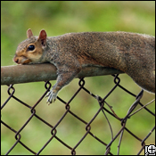
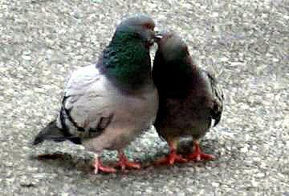

Yes and for you Americans, Canadians, French, Italians, Chinese, Japanese, English, Swedish, Irish, Spanish and New Zealanders. (Other Countries not welcome!) this is what an echidna looks like:
I thought an echidna looked like this...



the domestic dog:You didn't have to tell me that that was an American dog...
and that's about it.